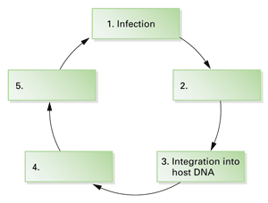
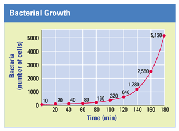
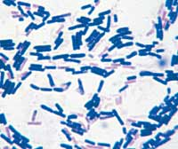

Reviewing Concepts
Multiple Choice
Choose the letter of the best answer.
1. How many years old are the oldest fossils estimated to be?
a. 4.0 billion
b. 3.5 billion
c. 600 million
d. 4.0 million
2. Which of the following is not used to classify prokaryotes?
a. cell shape
b. cell wall structure
c. type of nucleus
d. motility
3. What element do cyanobacteria release to the atmosphere as a byproduct of photosynthesis?
a. oxygen
b. carbon
c. nitrogen
d. phosphorus
4. All of the following are protections against pathogens, except
a. skin and mucous lining.
b. washing hands.
c. immune system.
d. avoiding sunlight.
5. Which of the following is part of the structure of a virus?
a. nucleus
b. protein coat
c. mitochondrion
d. cell wall
6. Viruses can reproduce through which of the following processes?
a. binary fission
b. lysogenic cycle
c. conjugation
d. endospore formation
Short Answer
7. Why do scientists think that photosynthetic prokaryotes were probably not the first life forms on Earth?
8. Identify three differences between archaea and bacteria.
9. Summarize three mechanisms of genetic recombination in prokaryotes.
10. Explain how early Earth's atmosphere shifted from anaerobic to aerobic.
11. Explain the role prokaryotes play in nitrogen recycling.
12. Describe two examples of bioremediation.
13. Compare two ways that bacteria cause illness.
14. Explain how a virus reproduces itself.
15. What is the single most effective method of reducing bacterial and viral infections?
16. What is the purpose of a vaccine?
Visualizing Concepts
17. Copy this simplified diagram of the life cycle of a retrovirus and fill in the blank boxes. Write a sentence explaining each statement you entered into the boxes.

Applying Concepts
Analyzing Information
18. Analyzing Graphs Examine the graph below to answer the questions.
a. How many bacteria were produced during the second hour?
b. At this rate, how many bacteria would be present at the end of 4 hours?
c. What type of a bacterial reproduction that you read about in this chapter would account for this type of rapid growth?
d. If one cell became resistant to an antibiotic due to a mutation at the 80-minute mark, how many cells would be resistant at the end of the 180-minute mark? (Assume the same growth rate.)

19. Analyzing Photographs Look at the photograph of the bacteria below and answer the following questions.
a. Based on the colors of these bacteria, what testing method was used on this slide?
b. What inferences can you make about the cell walls of these bacteria?

Critical Thinking
20. Evaluating Models Describe the model Stanley Miller built to simulate the different conditions thought to have existed on early Earth. Explain what inference he reached based on this model.
21. Developing Hypotheses Reread the description in Concept 16.5 about Edward Jenner's experiment with cowpox and smallpox viruses. Write a hypothesis that states the idea Jenner was testing when he performed his experiment.
22. Comparing and Contrasting Discuss the similarities and differences between the ways that bacteria and viruses cause disease, and the ways that those diseases are treated.
23. What's Wrong With These Statements?
Briefly explain why each statement is inaccurate or misleading.
a. All bacteria cause disease.
b. Viruses are living cells.
c. Antibiotics will cure a cold.
d. Bacteria are closely related to eukaryotes.
Performance Assessment
Writing The average diameters of a human cell, a bacterial cell, and a virus are about 50µm, 5µm, and 0.5µm, respectively. Use this information to select household or classroom objects with which you can model these size differences on a larger scale. Write a paragraph to accompany your model, explaining how you chose your objects and how your model is useful in making comparisons between cells and viruses.